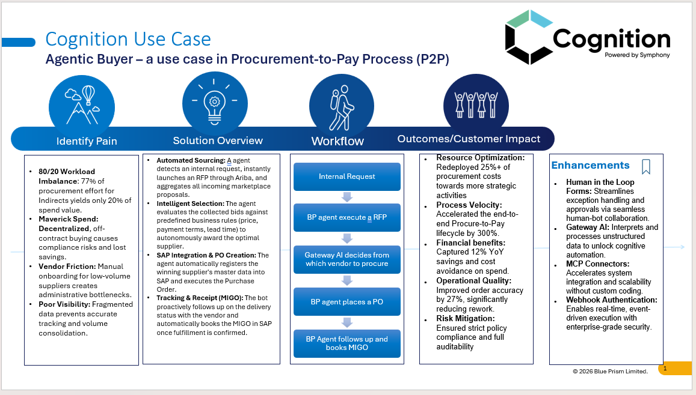
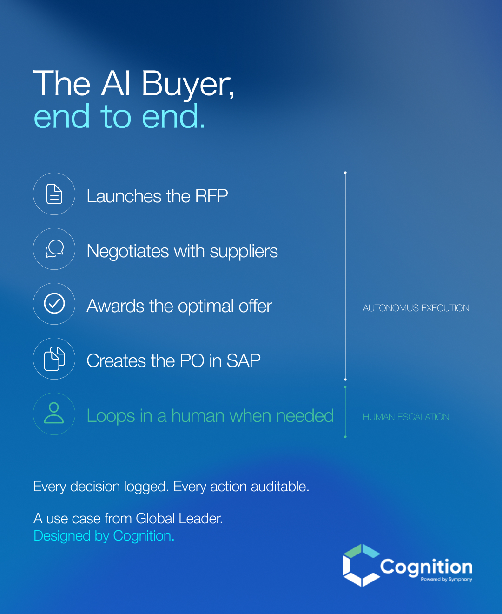
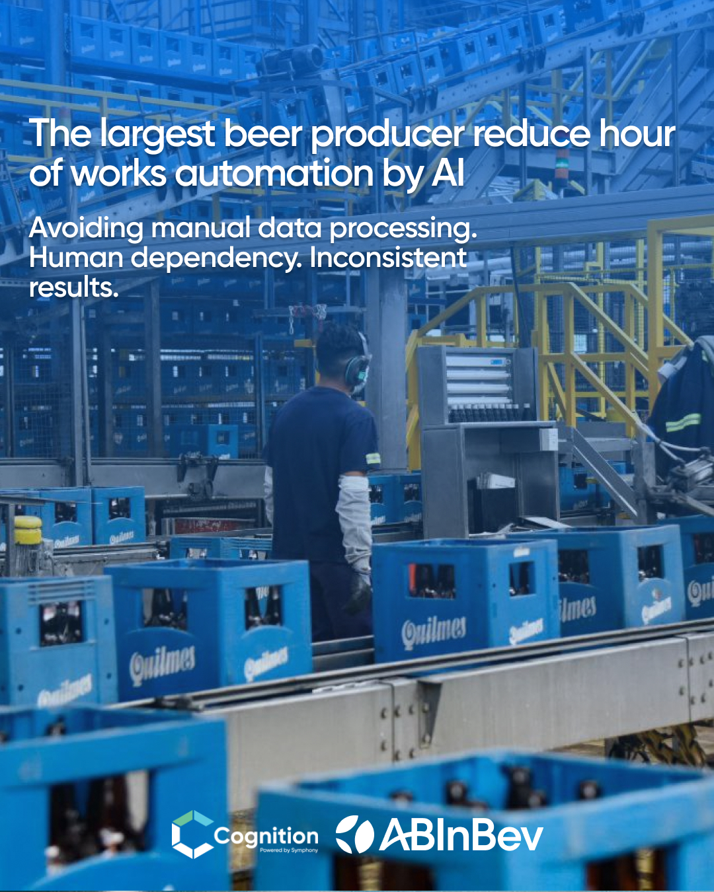
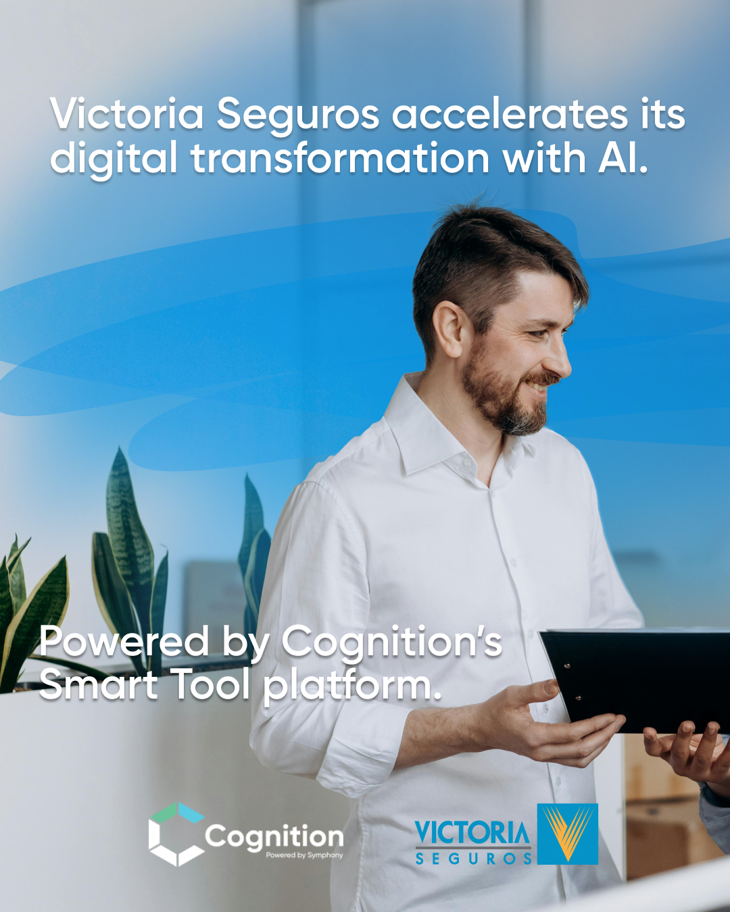
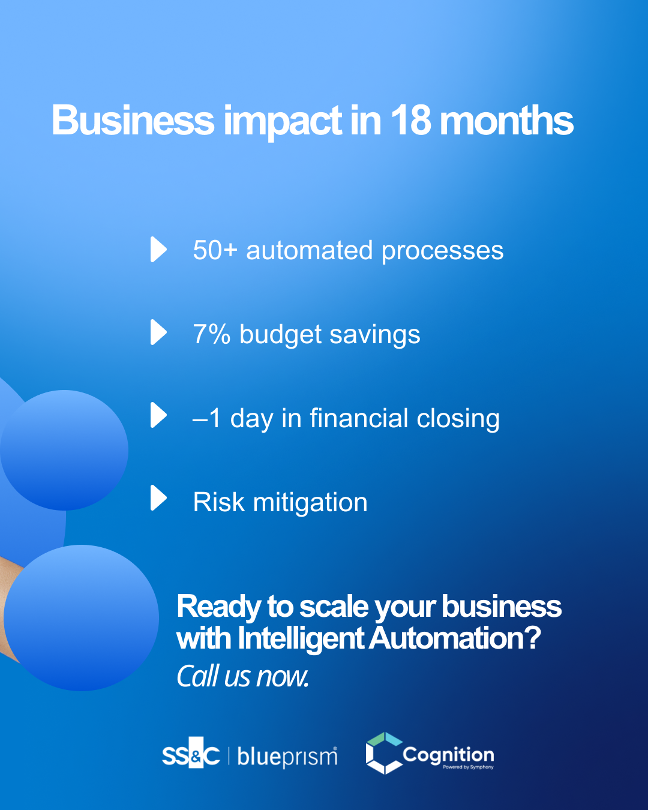

Estrategia editorial
Definición de pilares, audiencias, formatos y calendarios para construir autoridad en automatización e IA.
Caso principal · 2024—actualidad

Cómo convertimos soluciones complejas de automatización e inteligencia artificial en un sistema de comunicación claro, consistente y medible.
Visitar LinkedIn de Cognition ↗Presentaciones, casos de éxito y contenido conectados por una misma lógica visual, narrativa y estratégica.
Trabajo seleccionado
Una selección de videos, presentaciones y piezas desarrolladas para explicar productos, sectores, eventos y casos reales sin perder coherencia de marca.
Del dato técnico a una narrativa audiovisual y un sistema de piezas que explican problema, funcionamiento e impacto.




Un caso de extracción inteligente comunicado como sistema: situación inicial, arquitectura de solución y resultado operativo.



Comunicación de una transformación de atención y gestión de siniestros mediante chatbot, automatización e inteligencia artificial.


Una narrativa para mostrar el paso de la automatización tradicional hacia operaciones financieras más autónomas.


El desafío
Cognition desarrolla soluciones de RPA, automatización inteligente y agentes de IA para organizaciones de distintos mercados. El desafío no era encontrar temas para publicar: era traducir una propuesta altamente técnica en mensajes capaces de generar comprensión, autoridad y confianza.
La comunicación estaba distribuida entre LinkedIn, presentaciones, casos de éxito, eventos y sitio web. El trabajo consistió en conectar esas piezas, ordenar la narrativa y construir una voz reconocible sin simplificar el valor tecnológico.
La intervención
Definición de pilares, audiencias, formatos y calendarios para construir autoridad en automatización e IA.
Traducción de información técnica en historias, conceptos, guiones, carruseles, artículos y mensajes institucionales.
Estructura, copy y dirección visual de credenciales, casos de éxito, propuestas y materiales para explicar soluciones técnicas con impacto.
Unificación de criterios visuales y verbales entre LinkedIn, presentaciones, videos, web y comunicación institucional.
Resultados medidos
Datos verificados con reportes de LinkedIn y el export diario de seguidores. Cada cifra conserva su período exacto y separa crecimiento orgánico de pauta.
Audiencia alcanzada
Evolución
El vínculo comenzó con contenido institucional y LinkedIn. Con el tiempo se amplió hacia casos de éxito, presentaciones comerciales, comunicación de eventos, análisis de rendimiento, auditoría UX y una propuesta integral para conectar web, SEO, analítica y generación de demanda.
El valor del proyecto no está en una pieza aislada, sino en haber creado continuidad: una misma lógica estratégica capaz de adaptarse a industrias, mercados, productos y formatos diferentes.
¿Tu propuesta es difícil de explicar?